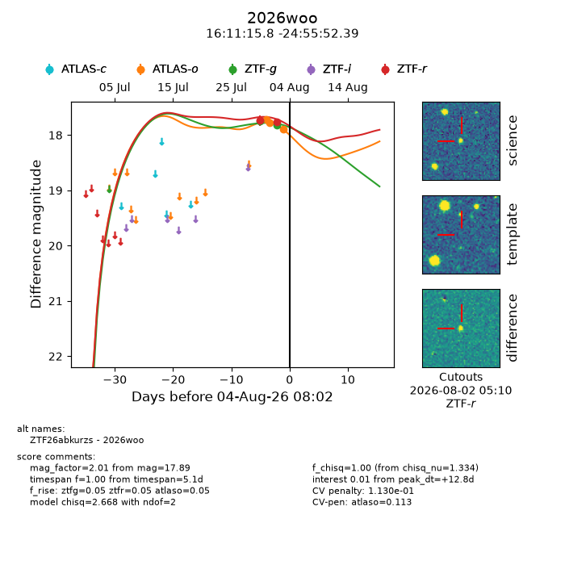
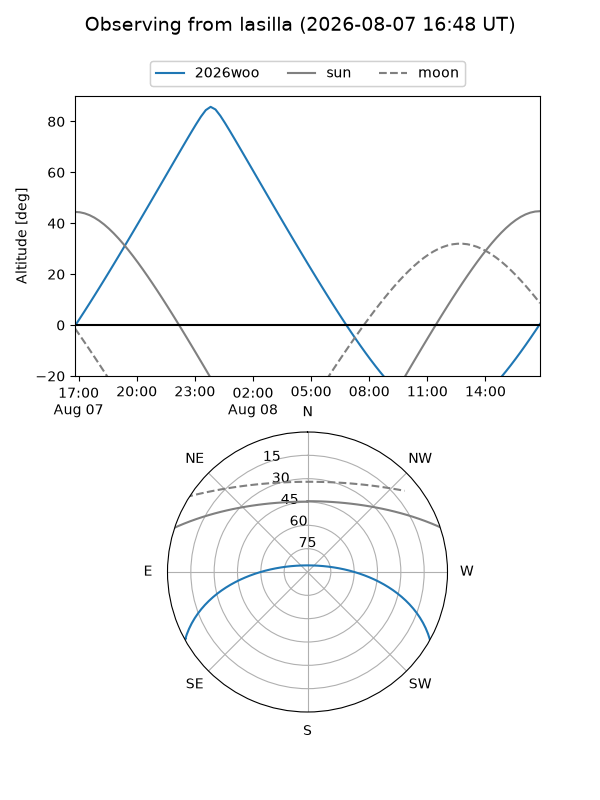
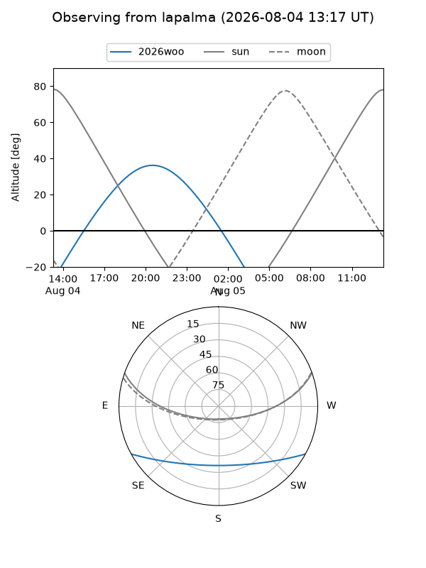
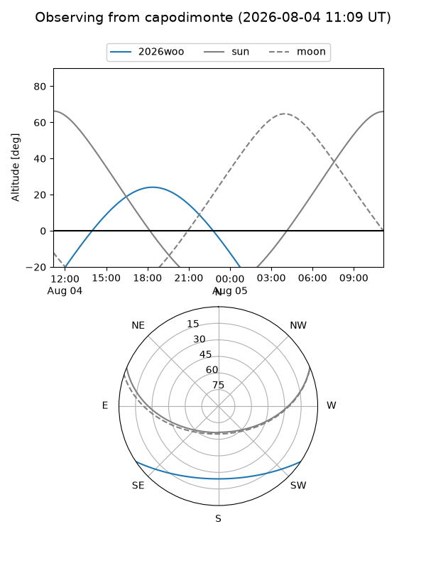
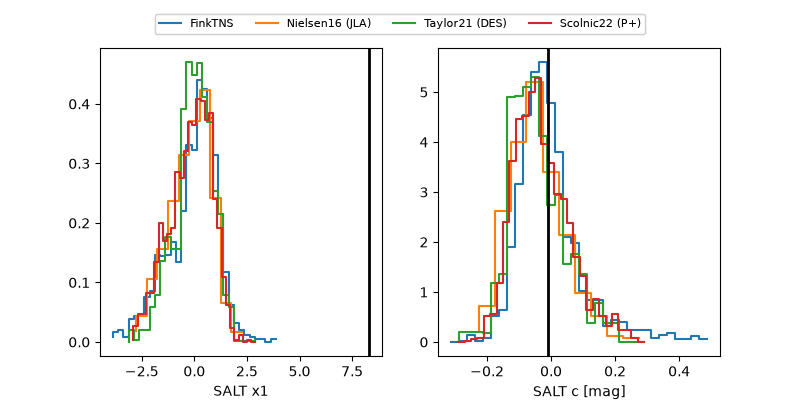

2026woo
Target 2026woo at 2026-08-04 08:18
Aliases and brokers:
FINK-ZTF: ztf.fink-portal.org/ZTF26abkurzs
Lasair-ZTF: lasair-ztf.lsst.ac.uk/objects/ZTF26abkurzs
ALeRCE-ZTF: alerce.online/object/ZTF26abkurzs
YSE-PZ: ziggy.ucolick.org/yse/transient_detail/2026woo
TNS name: wis-tns.org/object/2026woo
Direct TNS query: direct search
alt names
ZTF26abkurzs (ztf,fink_ztf)
2026woo (tns,yse)
Coordinates:
equatorial (ra, dec) = 242.8160,-24.93122
equatorial (HMS+DMS) = 16:11:15.84,-24:55:52.39
galactic (l, b) = (350.2061,+19.08814)
Flags:
TNS type: nan
peak dt: +12.8
likely cv: !!
Photometry:
last atlaso=17.89, ztfg=17.82, ztfr=17.75
3 atlaso, 2 ztfg, 2 ztfr detections
Lightcurve

Visibility



Additional plots
